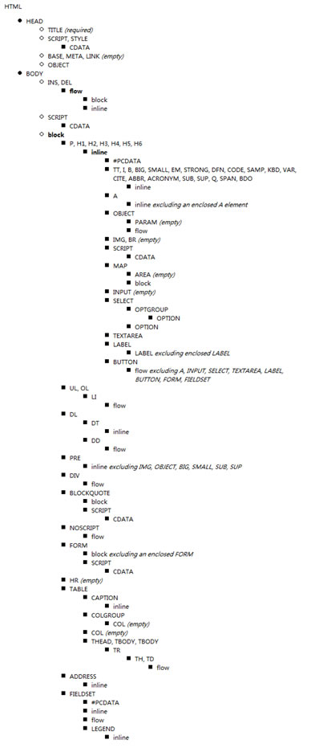
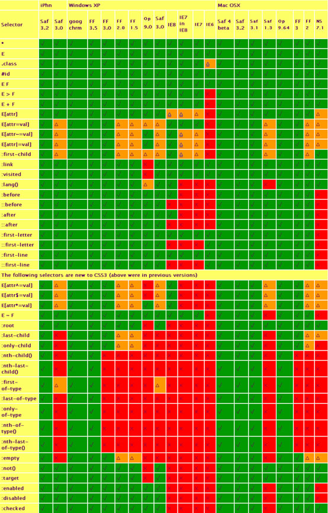

为提高团队协作效率, 便于后台人员添加功能及前端后期优化维护, 输出高质量的文档, 特制订此文档. 本规范文档一经确认, 前端开发人员必须按本文档规范进行前台页面开发. 本文档如有不对或者不合适的地方请及时提出, 经讨论决定后可以更改此文档。
所有文件统一使用UTF-8编码。请在页面添加对应的Meta标签，<meta charset='utf-8' />。
文件名称统一用小写的英文字母、数字和下划线“_”的组合，多个单词以下划线分开，其中不得包含汉字、空格和特殊字符；
HTML页面页首必须填写DOCTYPE。页面文档类型统一使用HTML5 DOCTYPE. 代码如下：
<!doctype html>
html页面请确保必须含有以下三个meta标签。
<meta http-equiv="Content-Type" content="text/html; charset=UTF-8" />
<meta name="renderer" content="webkit">//默认webkit内核
<meta http-equiv="X-UA-Compatible" content="IE=edge,chrome=1" />//如果是IE使用最新的引擎渲染页面
可以酌情添加以下Meta标签：
<meta name="robots" content="noindex,nofollow" />//禁止机器人检索
<meta name="keywords" content="关键字1, 关键字2" />
按照HTML规范，所有标签名及属性名必须全小写，属性值以双引号包裹，属性的等号两边禁止添加空格,要使用语义化标签，所有标签必须闭合。例如： “<br>”必须写作“<br />”。非替换元素禁止直接结束，例如：<div></div>禁止写成<div />。
<!-- 不推荐 -->
<a href='/'>Home</a>
<!-- 推荐 -->
<a href="/">Home</a>
<!-- 不推荐 -->
<a class='maia-button maia-button-secondary'>Sign in</a>
<!-- 推荐 -->
<a class="maia-button maia-button-secondary">Sign in</a>
禁止使用即将废弃的标签，例如：<b>，<i>，<font>等。具体参考附录6.1
标签的嵌套必须按照(X)HTML规范嵌套，例如：<li>必须在<ol>或<ul>标签中，不能脱离这两个标签。
区分块级元素及行内元素。行内元素禁止嵌套块级元素。
正确区分自闭合元素和非自闭合元素. 非法闭合包括：<br>..</br>、<script />、<iframe />, 非法闭合会导致页面嵌套错误问题;
<!-- 不推荐 -->
<title>Test</title>
<article>This is only a test.
<!-- 推荐 -->
<!DOCTYPE html>
<meta charset="utf-8">
<title>Test</title>
<article>This is only a test.</article>
关于HTML标签的嵌套规则，请参考附录6.2
对动态内容型的图片和背景型的图片进行区分。商品展示图等动态数据绑定的图片为内容型图片，而按钮、图标以及边框样式等不需要动态数据绑定的均属于背景型图片。背景型图片应使用CSS嵌入到页面，禁止使用<img>标签显示在页面中。背景型图片应采用CSS Sprite技术，将零散的图片合成为一张图片，以减少http请求。关于CSS Sprit技术，请参考6.3
图片的命名应该全小写，多个单词以下划线“_”分隔。
为页面中的功能模块添加注释，以降低开发人员的嵌套成本和后期的维护成本. 例如：
<div id="sample">
...
</div>
<!-- #sample END -->
<div class="sample">
...
</div>
<!-- .sample END -->
<!doctype html>
<html>
<head>
<meta http-equiv="Content-Type" content="text/html;charset=UTF-8"/>
<meta name="renderer" content="webkit"/>
<meta http-equiv="X-UA-Compatible" content="IE=Edge,chrome=1"/>
<title>Sample page</title>
<link rel="stylesheet" href="css_example_url"/>
<!--或引用公用样式文件-->
</head>
<body>
<div id="page">
</div>
<script src="js_example_url"></script>
<!—或引用公用JS文件-->
<script>
// 你的代码
</script>
</body>
</html>
代码提交前要确保编码的可读性，行缩进统一为4个空格。功能模块间可以使用换行保持分隔。
<ul>
<li>
Test
</li>
</ul>
对于类的命名，采用全小写，多个单词以中线符“-”分隔。例如：.nav，.panel-title等。命名采用英文单词，禁止使用汉语拼音，尽量避免使用数字。
头：header 内容：content/container 尾：footer 导航：nav 侧栏：sidebar 栏目：column 页面外围控制整体布局宽度：wrapper 左右中：left right center 登录条：loginbar 标志：logo 广告：banner 页面主体：main 热点：hot 新闻：news 下载：download 子导航：subnav 菜单：menu 子菜单：submenu 搜索：search 友情链接：friendlink 页脚：footer 版权：copyright 滚动：scroll 内容：content 标签页：tab 文章列表：list 提示信息：msg 小技巧：tips 栏目标题：title 加入：joinus 指南：guild 服务：service 注册：regsiter 状态：status 投票：vote 合作伙伴：partner (二)注释的写法: /* Footer */ 内容区 /* End Footer */ (三)id的命名: (1)页面结构 容器: container 页头：header 内容：content/container 页面主体：main 页尾：footer 导航：nav 侧栏：sidebar 栏目：column 页面外围控制整体布局宽度：wrapper 左右中：left right center
(2)导航 导航：nav 主导航：mainbav 子导航：subnav 顶导航：topnav 边导航：sidebar 左导航：leftsidebar 右导航：rightsidebar 菜单：menu 子菜单：submenu 标题: title 摘要: summary
(3)功能 标志：logo 广告：banner 登陆：login 登录条：loginbar 注册：regsiter 搜索：search 功能区：shop 标题：title 加入：joinus 状态：status 按钮：btn 滚动：scroll 标签页：tab 文章列表：list 提示信息：msg 当前的: current 小技巧：tips 图标: icon 注释：note 指南：guild 服务：service 热点：hot 新闻：news 下载：download 投票：vote 合作伙伴：partner 友情链接：link
公用组件的命名规则：(公用指已经模块化的HTML代码片段或系统中常用HTML片段可以在多处使用的)
命名可以在样式前添ui标识，如ui-dialog用于弹出框组件的样式定义。公用组件的命名请在相关子样式前附加命名空间，确保组件样式的正确。
例如：
.ui-dialog{margin:0 auto}
.ui-dialog .dialogTitle{padding:10px;font-size:14px;text-align:center}
.ui-dialog .dialogContent{padding:10px;font-size:12px;}
常用功能性样式的命名规则可以根据实际情况命名，但应避免使用极简命名，如.s或.fl，不但无法表达任何意义，还会增加代码检索时的难度。
字母一律小写，每条属性独占一行，属性名冒号后空一格。行结束以分号“;”结尾。例如
/* 不推荐 */
.test {
display: block;
height: 100px
}
/* 推荐 */
.test {
display: block;
height: 100px;
}
为了提高可读性，尽可能的使用简写属性。例如：
/* 不推荐 */
border-top-style: none;
font-family: palatino, georgia, serif;
font-size: 100%;
line-height: 1.6;
padding-bottom: 2em;
padding-left: 1em;
padding-right: 1em;
padding-top: 0;
/* 推荐 */
border-top: 0;
font: 100%/1.6 palatino, georgia, serif;
padding: 0 1em 2em;
对属性值为 0 的情况省略单位；例如
margin: 0;
padding: 0;
尽可能使用 3 个字符的 16 进制颜色值；例如
/* 不推荐 */
color: #eebbcc;
/* 推荐 */
color: #ebc;
禁止使用CSS通配符选择器。
禁止使用ID选择器，样式应该使用类选择器，ID有可能绑定着页面的业务逻辑，有可能发生改变，因此应尽量避免使用ID选择器应用样式。
为了性能原因， 请避免元素选择器和类选择器以及 id 选择器混用;例如
/* 不推荐 */
ul#example {
}
div.error {
}
/* 推荐 */
#example {
}
.error {
}
尽量避免使用CSS Hack，对于IE系列的浏览器兼容性问题，采用条件注释加载对应的CSS，覆盖默认样式的方式解决。有关CSS Hack技术及IE的条件注释技术具体请参考附录6.5。
变量与函数名采用驼峰式命名
常量使用全大写，多个单词以下划线“_”分隔
关键字后空一格
类中的方法应写入类的prototype中，私有方法以下划线“_”开头
声明变量时, 必须加上 var 关键字.
尽量减少全局变量的使用.
语句总是以分号结尾.
不要在块内声明函数.
if/else/while/for 条件表达式必须有小括号;
语句块必须有大括号;
不要封装基本类型.
禁止使用 with .
减少使用 continue 和 break .
仅在函数内使用 this .
使用 Array/Object 直接量, 避免使用 Array/Object 构造器.
禁止修改内置对象的原型.
示例：
var foo = function (params) {
if (params.length > 0) {
doSomthing(params);
}
};
function Student(name, gender) {
this.name = name;
this.gender = gender;
}
Student.prototype.study = function (course) {
doSomething();
};
JavaScript的文档注释采用JSDoc文档注释，所有公共函数、类都应该添加文档注释。
JSDoc示例：
/**
* @function 为一个checkbox添加对一组checkbox的全选功能
* @param {String|Element} checkbox 目标element对象或id
* @param {String} checkBoxName 受控checkbox的name
* @param {String} [form] 受控checkbox所在表单的name或id，可选
*/
function addCheckAllFunction(checkbox checkboxName, form) {
}
尽可能的将JS的引入位置放到body的结束标签之前，以减少被JavaScript载入时阻塞页面的情况。有关JavaScript阻塞的问题，请参考附录6.7。
不能在html中直接嵌入JavaScript。例如：
<button id=”okButton” type=”button” onclick=”ok();”>Button</button>
必须采取无干扰的JavaScript方式，在JavaScript中注册该事件。有关无干扰的JavaScript技术。
<button id="okButton" type="button" >Button</button>
$('#okButton').on('click', function() {
Console.log('you clicked the button.');
});
对于必须使用的全局变量，变量名应以“G”开头，如G_userInfo。
尽量不要在全局作用域下声明变量或者函数。他们应该被组织在各自的业务命名空间下，或在一个匿名函数中。
数值操作符(如, +/-/*/% 等)两边留空;
赋值操作符/等价判断符两边留一空格;
for 循环条件中, 分号后留一空格;
变量声明语句, 数组值, 对象值及函数参数值中的逗号后留一空格;
空行不要有空格;
行尾不要有空格;
逗号和冒号后一定要跟空格;
点号前后不要出现空格;
空对象和数组不需要填入空格;
函数名末尾和左括号之间不要出现空格;
applet |
basefont |
blackface |
u |
center |
dir |
font |
i |
isindex |
layer |
menu |
noembed |
s |
shadow |
strike |
|
|
|
alink |
align |
background |
border |
color |
compact |
face |
height |
language |
noshade |
nowrap |
start |
version |
vlink |
width |
|
|
|
下图为HTML4 Strict的嵌套规则以及关于嵌套规则图的一些说明：
小写的单词表明一组或一系列 HTML 标签 每一项条目（标签）后都跟随一组标签列表，如果没有这个列表，那么表明该条目（标签）内部不允许包含任何标签。这意味着该条目内部只能包含纯文本内容（#PCDATA）。如果注明 (empty)，这意味着该条目内部不允许包含任何形式的内容。 #PCDATA 的意思是“parsed character data”，即纯文本内容（不包括任何 HTML 标签，但是转义内容可以存在，比如 ä 和 ä） CDATA 的意思是“character data”，这意味着不包括转义内容的纯文本内容，详细内容可以参考CDATA Confusion excluding意即不得直接或者间接的包含所列的元素
CSS Sprites其实就是把网页中一些背景图片整合到一张图片文件中，再利用CSS的“background-image”，“background- repeat”，“background-position”的组合进行背景定位，background-position可以用数字能精确的定位出背景图片的位置。
利用CSS Sprites能很好地减少了网页的http请求，从而大大的提高了页面的性能，这也是CSS Sprites最大的优点，也是其被广泛传播和应用的主要原因。
解决了网页设计师在图片命名上的困扰，只需对一张集合的图片上命名就可以了，不需要对每一个小元素进行命名，从而提高了网页的制作效率。
更换风格方便，只需要在一张或少张图片上修改图片的颜色或样式，整个网页的风格就可以改变。维护起来更加方便。
下图为各CSS选择器在不同系统中不同浏览器的兼容状况。其中绿色代表完全支持，橙色代表部分支持，红色代表完全不支持。
CSS Hack是在标准CSS没办法兼容各浏览器显示效果时才会用上的补救方法，利用了各个浏览器对CSS的支持和解析结果不一样的特点，例如： IE6能识别下划线"_"和星号"*"，IE7能识别星号"*"，但不能识别下划线"_"，而Firefox两个都不能识别。书写顺序一般是将识别能力强的浏览器的CSS写在后面。比如：
div{
background: green; /* for firefox */
*background: blue; /* for IE7 */
_background: red; /* for IE6 */
}
这样在Firefox中看到的背景是绿色，在IE7中看到的是蓝色，而IE6中看到的是红色。
利用这种方式，可以解决多种由于IE独特的文档渲染方式造成的问题。
条件注释是微软IE浏览器在HTML源代码中被解释的条件语句。最早出现于IE5，支持到IE8。条件注释用于在IE浏览器中显示或隐藏一段代码。
<!--[if IE 6]>
<p>
You are using Internet Explorer 6.
</p>
<![endif]-->
<!--[if !IE]>-->
<p>
You are not using Internet Explorer.
</p>
<!--<![endif]-->
浏览器是按标签来解析的，每解析一段标签，就显示这段标签的内容。如果标签引入了外部文件（如图像），则会一边继续解析其他标签，一边继续下载该外部文件，直到载入完毕。
但浏览器在解析script标签时，由于JavaScript可能会改变浏览器内容，会停止所有页面元素的载入，直到这段script代码执行完毕。如果这个script标签引入了一个来自外部服务器的js文件，而这个服务器访问速度很慢，那么页面上其他元素便都得等到这个js文件载入并执行完毕才能继续载入。
无干扰的 JavaScript 的首要目标就是保持 JavaScript 代码和 HTML 标记的分离。这种让内容分离于形为的方式，与将 CSS 放入样式表而保持内容与表现分离的方式如出一辙。为了实现这一目标，把所有的 JavaScript 代码放到外部文件中。
无干扰的 JavaScript 的第二个目标是它必须降低优雅性。脚本应该基于增加 HTML 的内容来构思和设计，但是，即使没有这些 JavaScript 代码，内容也应该能用。
无干扰的 JavaScript 的第三个目标是，它不能降低一个 HTML 页面的可访问性。